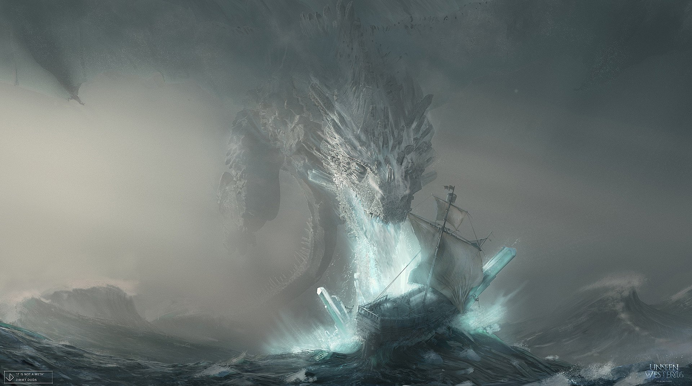

Студёное море
Неизвестно, как далеко Студёное море простирается на восток, ибо ни один представитель Вестероса не заходил дальше Тысячи Островов. Моряки и певцы уверяют, что оно бесконечно; мудрецы полагают, что если земля и вправду кругла, Студёное море может соединяться с Закатным. На Студёном море, помимо иббенийских городов, также стоят Лорат с его колониями, Браавос, Нефер и Саат. В Горькотравный залив Студёного моря впадает Сарна.
